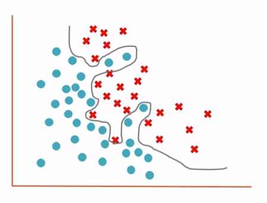

Terminology
Model
The representation of what an ML system has learned from the training data.
Labels
A label is the thing we're predicting—the y variable in simple linear regression. The label could be the future price of wheat, the kind of animal shown in a picture, the meaning of an audio clip, or just about anything.
Features
A feature is an input variable—the x variable in simple linear regression. $$x_1,x_2,x_3,....x_N$$
synthetic feature: A feature not present among the input features, but created from one or more of them. Kinds of synthetic features include:
- Bucketing a continuous feature into range bins.
- Multiplying (or dividing) one feature value by other feature value(s) or by itself.
- Creating a feature cross.
Features created by normalizing or scaling alone are not considered synthetic features.
Scaling
A commonly used practice in feature engineering to tame a feature's range of values to match the range of other features in the dataset. For example, suppose that you want all floating-point features in the dataset to have a range of 0 to 1. Given a particular feature's range of 0 to 500, you could scale that feature by dividing each value by 500.
Weight
A coefficient for a feature in a linear model, or an edge in a deep network. The goal of training a linear model is to determine the ideal weight for each feature. If a weight is 0, then its corresponding feature does not contribute to the model.
Data Set
training set: The subset of the dataset used to train a model.
test set: The subset of the dataset that you use to test your model after the model has gone through initial vetting by the validation set.
validation set: A subset of the dataset—disjoint from the training set—used in validation.
temporal data: Data recorded at different points in time. For example, winter coat sales recorded for each day of the year would be temporal data.
stationarity: A property of data in a dataset, in which the data distribution stays constant across one or more dimensions. Most commonly, that dimension is time, meaning that data exhibiting stationarity doesn't change over time. For example, data that exhibits stationarity doesn't change from September to December.
static model: A model that is trained offline.
Examples
An example is a particular instance of data, x. We break examples into two categories:
- labeled examples
- unlabeled examples
A labeled example includes both feature(s) and the label. That is: {features, label}: (x, y)
Use labeled examples to train the model.
An unlabeled example contains features but not the label. That is: {features, ?}: (x, ?)
Once we've trained our model with labeled examples, we use that model to predict the label on unlabeled examples.
Models
A model defines the relationship between features and label (and are defined by internal parameters, which are learned). For example, a spam detection model might associate certain features strongly with "spam". Let's highlight two phases of a model's life:
-
Training means creating or learning the model. That is, you show the model labeled examples and enable the model to gradually learn the relationships between features and label. The goal of training a model is to find a set of weights and biases that have low loss, on average, across all examples.
-
Inference means applying the trained model to unlabeled examples. That is, you use the trained model to make useful predictions (y'). For example, during inference, you can predict medianHouseValue for new unlabeled examples.
Loss
Loss is the penalty for a bad prediction or how far a model's predictions are from its label. That is, loss is a number indicating how bad the model's prediction was on a single example. If the model's prediction is perfect, the loss is zero; otherwise, the loss is greater.
L1 Loss
Loss function based on the absolute value of the difference between the values that a model is predicting and the actual values of the labels. L1 loss is less sensitive to outliers than L2 loss.
L2 Loss
This function calculates the squares of the difference between a model's predicted value for a labeled example and the actual value of the label. Due to squaring, this loss function amplifies the influence of bad predictions. That is, squared loss reacts more strongly to outliers than L1 loss. (used in linear regression)
$$ \begin{align} L_2 Loss & = (observation - prediction)^2 \\ & = (y - y')^2 \\ & = \sum_{(x,y)\in D}(y-prediction(x))^2 \end{align} $$
$$\sum \text{:We're summing over all examples in the training set.}$$
$$D \text{: is a data set containing many labeled examples, which are (x,y) pairs.}$$
$$ \text{ Sometimes useful to average over all examples, } \text{so divide out by} \frac{1}{|D|}.$$
Selection Bias
Errors in conclusions drawn from sampled data due to a selection process that generates systematic differences between samples observed in the data and those not observed. The following forms of selection bias exist:
- coverage bias: The population represented in the dataset does not match the population that the ML model is making predictions about.
- sampling bias: Data is not collected randomly from the target group.
- non-response bias (also called participation bias): Users from certain groups opt-out of surveys at different rates than users from other groups.
Gradient
Gradient The vector of partial derivatives with respect to all of the independent variables. In machine learning, the gradient is the vector of partial derivatives of the model function. The gradient points in the direction of steepest ascent.
$$(y - y')^2$$ The derivative of above with respect to the weights and biases tells us how loss changes for a given example
Gradient Descent A technique to minimize loss by computing the gradients of loss with respect to the model's parameters, conditioned on training data. Informally, gradient descent iteratively adjusts parameters, gradually finding the best combination of weights and bias to minimize loss.
Exploding Gradient Problem The tendency for gradients in a deep neural networks (especially recurrent neural networks) to become surprisingly steep (high). Steep gradients result in very large updates to the weights of each node in a deep neural network.
Models suffering from the exploding gradient problem become difficult or impossible to train. Gradient clipping can mitigate this problem.
Gradient Clipping A commonly used mechanism to mitigate the exploding gradient problem by artificially limiting (clipping) the maximum value of gradients when using gradient descent to train a model.
Convergence
Informally, often refers to a state reached during training in which training loss and validation loss change very little or not at all with each iteration after a certain number of iterations. In other words, a model reaches convergence when additional training on the current data will not improve the model. In deep learning, loss values sometimes stay constant or nearly so for many iterations before finally descending, temporarily producing a false sense of convergence.
Underfitting
Producing a model with poor predictive ability because the model hasn't captured the complexity of the training data. Many problems can cause underfitting, including:
- Training on the wrong set of features.
- Training for too few epochs or at too low a learning rate.
- Training with too high a regularization rate.
- Providing too few hidden layers in a deep neural network.
Overfitting
The algorithm analyses the data and trains itself to create a high mathematical order model based on the data.

$$y = x_1 + w_2x_2^3 + w_3x_3^8$$
These high-order terms let this equation define a precise decision boundary between the positive and negative values, but as a result, the training process has created a model that works very well on training data but poorly when asked to predict values based on data it has not trained - this is the class overfit problem and is an issue that must be handled to create machine learning models that work well not only on the training data but also on real-world data.
Regularization, Cross validation, Ensemble learning of which dropout is a part, are all ways to mitigate overfitting. We add an additional parameter where if the model coefficients get too complex we add a penalty to the objective function. This is the technique that we use in regression.
Regularization: The penalty on a model's complexity. Different kinds of regularization include:
- L1 regularization
- L2 regularization
- Dropout regularization
L1 is a type of regularization that penalizes weights in proportion to the sum of the absolute values of the weights. In models relying on sparse features, L1 regularization helps drive the weights of irrelevant or barely relevant features to exactly 0, which removes those features from the model. Contrast with L2 regularization.
L2 is a type of regularization that penalizes weights in proportion to the sum of the squares of the weights. L2 regularization helps drive outlier weights (those with high positive or low negative values) closer to 0 but not quite to 0. (Contrast with L1 regularization.) L2 regularization always improves generalization in linear models.
Dropout is a form of regularization useful in training neural networks. Dropout regularization works by removing a random selection of a fixed number of the units in a network layer for a single gradient step. The more units dropped out, the stronger the regularization. This is analogous to training the network to emulate an exponentially large ensemble of smaller networks.
Regularization rate A scalar value, represented as lambda, specifying the relative importance of the regularization function. The following simplified loss equation shows the regularization rate's influence: $$\text{minimize(loss function + }\lambda\text{(regularization function))}$$ Raising the regularization rate reduces overfitting but may make the model less accurate.
Hyperplane
A boundary that separates a space into two subspaces. For example, a line is a hyperplane in two dimensions and a plane is a hyperplane in three dimensions. More typically in machine learning, a hyperplane is the boundary separating a high-dimensional space. Kernel Support Vector Machines use hyperplanes to separate positive classes from negative classes, often in a very high-dimensional space.
Parameter
A variable of a model that the ML system trains on its own.
A model parameter is a configuration variable that is internal to the model and whose value can be estimated from data. Often model parameters are estimated using an optimization algorithm, which is a type of efficient search through possible parameter values.
- They are required by the model when making predictions.
- They values define the skill of the model on your problem.
- They are estimated or learned from data.
- They are often not set manually by the practitioner.
- They are often saved as part of the learned model.
- Parameters are key to machine learning algorithms. They are the part of the model that is learned from historical training data.
Statistics: In statistics, you may assume a distribution for a variable, such as a Gaussian distribution. Two parameters of the Gaussian distribution are the mean (mu) and the standard deviation (sigma). This holds in machine learning, where these parameters may be estimated from data and used as part of a predictive model.
Programming: In programming, you may pass a parameter to a function. In this case, a parameter is a function argument that could have one of a range of values. In machine learning, the specific model you are using is the function and requires parameters in order to make a prediction on new data.
Some examples of model parameters include:
- The weights in an artificial neural network.
- The support vectors in a support vector machine.
- The coefficients in a linear regression or logistic regression.
Hyperparameter
Hyperparameters are the configuration settings used to tune how the model is trained and it is external to the model, whose value cannot be estimated from data.
- They are often used in processes to help estimate model parameters.
- They are often specified by the practitioner.
- They can often be set using heuristics.
- They are often tuned for a given predictive modeling problem.
- We cannot know the best value for a hyperparameter on a given problem. We may use rules of thumb, copy values used on other problems, or search for the best value by trial and error.
When a machine learning algorithm is tuned for a specific problem, such as when you are using a grid search or a random search, then you are tuning the hyperparameters of the model or order to discover the parameters of the model that result in the most skillful predictions.
Hyperparameters are often referred to as model parameters which can make things confusing. A good rule of thumb to overcome this confusion is as follows:
If you have to specify a model parameter manually then it is probably a model hyperparameter.
Some examples of model hyperparameters include:
- The learning rate for training a neural network.
- The C and sigma hyperparameters for support vector machines.
- The k in k-nearest neighbors.
Grid Search is an approach to hyperparameter tuning that will methodically build and evaluate model for each combination of algorithm parameters specified in a grid.
Learning Rate A scalar used to train a model via gradient descent. During each iteration, the gradient descent algorithm multiplies the learning rate by the gradient. The resulting product is called the gradient step.
Time Series Analysis
A subfield of machine learning and statistics that analyzes temporal data. Many types of machine learning problems require time series analysis, including classification, clustering, forecasting, and anomaly detection. For example, you could use time series analysis to forecast the future sales of winter coats by month based on historical sales data.